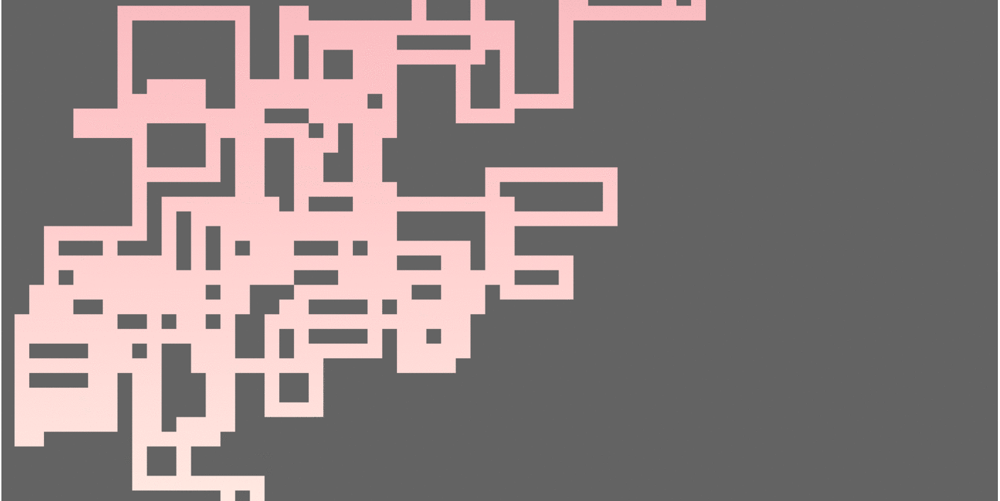

Here is a selection of images of Waluigi's Taco Stand
Waluigi's fine selection of tacos

The title screen

Screenshot of gameplay

This is the sort of stuff the Random Walk Algorithm can do
Another animation showing how the algorithm works, except ours is more like squares than lines, and since we're only using a 15x15 grid it won't be so big
Here's a random guy walking, and maybe he's thinking about algorithms